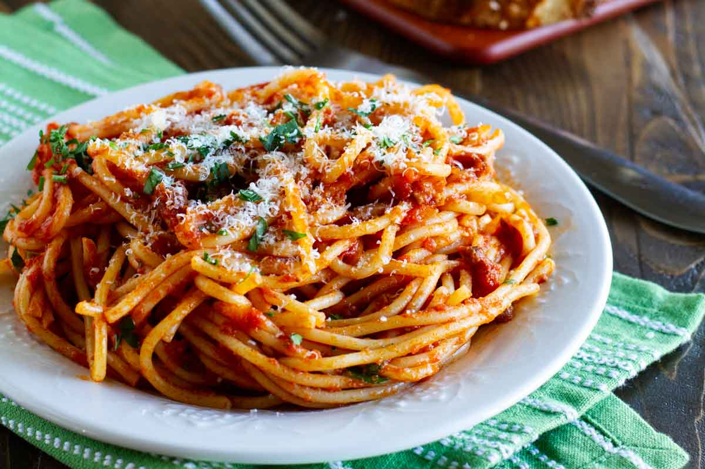

Spaghetti Recipe

Description
Sometimes you need something easy and fast. This Easy Spaghetti Meat Sauce starts off with canned spaghetti
sauce but elevates it with a few simple ingredients.
Ingredients
- ground beef
- sweet onion
- spaghetti sauce
- sugar
- dry spaghetti
- parmesan cheese
Steps
- Cook the beef in a large skillet over medium-high heat, breaking it up as it cooks. When the beef is halfway
cooked, add the onion and continue to cook until the beef is cooked through and the onion is softened. Add
the spaghetti sauce and the sugar and bring to a simmer. Simmer for 20 to 30 minutes.
- Bring a large pot of water to a boil. Salt generously. Add the pasta and cook until al dente.
- Stir the pasta into the sauce. Serve topped with freshly grated Parmesan cheese.
Back To Homepage